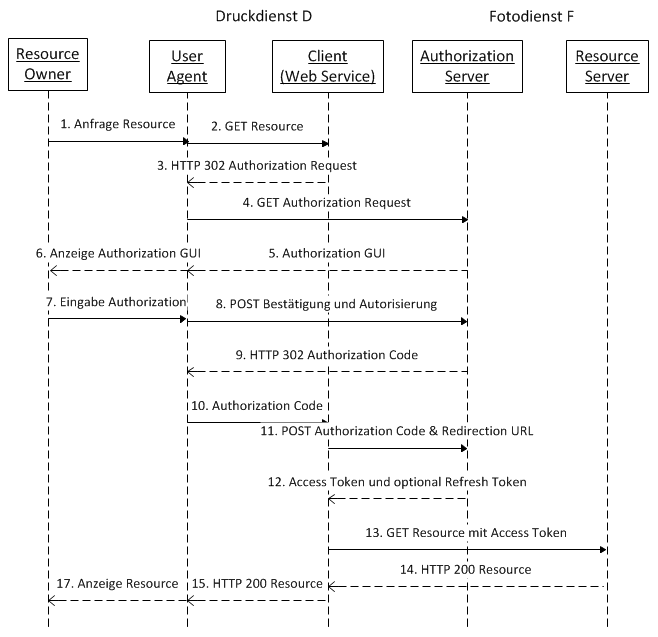
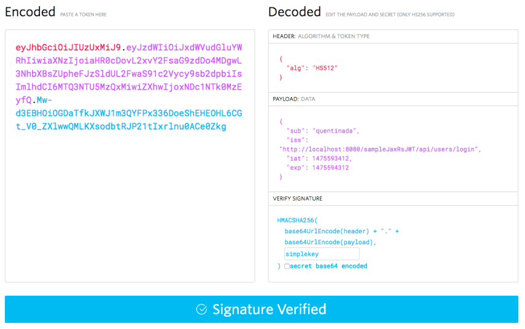

Web Security
Andreas Happe
Federation / Single-Sign On
Warum SSO
- Auslagerung der Login/Logout Funktionalität
- Es müssen keine Passwörter gespeichert/bearbeitet werden
- User Experience ist besser
- Identity Provider übernimmt z. B. MFA
- Erweiterte Identitätskontrolle bei der Registrierung
Festival-Beispiel
- Kontrolle am Eingang (Identitätsprovider)
- Festivalarmbänder zur Zugriffs- und Alterskontrolle
- Getränkestand kontrolliert Armband
- Ohne Band wird der Benutzer zur Eingangskontrolle geschickt
- Band (Token) ist für die Dauer des Festivals gültig
- Der Besitzer des Bands (Token) darf die Operation ausführen, auch wenn er einfach ein Band entwendet hat
Festival-Beispiel
| OAuth2 | SAML2 | |
|---|---|---|
| Getränkestand | Resource Server | Service Provider |
| Bandausgabe | Authorization Server | Identity Provider |
| Band | (JWT) Token | Token in XML Dokument |
OAuth2 vs SAML2 vs JWT
- SAML2: Federation Protokoll
- OAuth2: Zugriff von Clients auf Ressourcen
- JWT: Format für Tokens
OAuth2
Beteiligte Parteien
| Partei | Rolle |
|---|---|
| Resource Owner | kann Berechtigungen authorisieren |
| Resource Server | speichert Daten im Auftrag eines Resource Owners |
| Client | will auf die Daten eines Resource Owners am Server zugreifen |
| Authorization Server | erstellt die Zugriffsberichtigung |
OAuth2: Authorization Grant Request
- Scope der Authorization
- read/write
- github: include private repositories
- dropbox: grants auf folder Ebene
OAuth2: token-basiertes Zugriffssystem
- User-Identität ist eigentlich egal..
- Keine dezidierte Logout Operation
OAuth2: verschiedene Flows
OpenID-Connect
- Implementierung einer Authentication auf Basis von OAUTH2
- Verschiedene Flows
- Typischerweise sind zwei Endpunkte definiert (Token, User-Daten)
JSON Web Tokens
Grundsätzlich
- Token Format, RFC 7519
- Dienen zur Übertragung von Permissions
- Übertragung per
- HTTP Parameter: please don’t
- Cookie: sameSite, httpOnly, Secure-Flags setzen
- HTTP Header als bearer token
Grundaufbau

Grundaufbau
JSON Web Tokens
- Header
- alg: Verwendeter Algorithmus
- typ: “JWT”
- Beispiele für Content
- iss: issuer
- sub: subject
- aud: audience
- exp und nbf, iat: Laufzeiten
- jti: json token id
Problem: Header
- Header nicht Integritätsgesichert
- Beispiel: NULL alg
- Beispiel: HS vs RS confusion
MAC/PubKey Confusion
Entwickler verwendet eine Bibliothek, mit folgender Überprüfungsfunktion:
validate(token, key)
# validate checkt den token-alg
# und verwendet entweder MAC oder Signature
# key: public-key bei Signature
# key: shared-secret-key bei MACEntwickler geht davon aus, dass fix eine Siganture verwendet wird:
validate(token, public-key)MAC/PubKey Confusion
Der Angreifer nimmt den public key und verwendet ihn um einen MAC-based token zu erstellen, setzt den Algorithmus auf MAC
token(alg: mac, content, mac(public-key, content))der Anwendungscode am Server erwartet eigentlich public-keys und ruft folgendes auf:
validate(mac-token, public-key)Resultat
die Bibliothek glaubt aufgrund des Tokens (alg) dass ein MAC gebaut werden sollte und berechnet mac(public-key, content).. und akzeptiert deswegen das übergebene Token!
Immer Algorithmus am Server prüfen und fixieren
Problem: RNG
- offline-cracking
SAML2
Security Markup Language
- Austausch von Authentication und Authorization Informationen zwischen mehreren Parteien
- Beteiligte Parteien
- IdP
- SP
- Client
- Mehrere Flows
- Sign-In/Sign-Out
- jeweils IdP und SP triggered
- multiple protocol bindings
SAML2 Security Assumptions
- issuer
- subject
- conditions: wann ist die assumption gültig
- attributes: weitere Informationen, z. B. Rollen
- signiert
- Beispiel
Beispiel: SP-triggered Flow

Logout-Funktionalität
- Identity-Provider triggered
- Service-Provider triggered
Probleme
- Interoperabilität